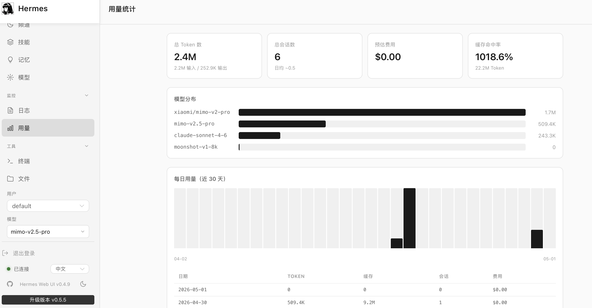

Copyright © 2025 俗人的blog. All rights reserved.
一句话观点：AI Agent 很酷，也确实有用，但对大多数普通用户来说，Claude Code（CC）和 Codex 这类“人机协同”的工具，往往更省钱、更稳定、也更可控。

以 Hermes 为例，已经支持多种 gateway（飞书、元宝等）。只要宿主机在线，你在外面也能远程下发任务，让它继续干活。这个能力在“移动端盯任务”场景里，确实很香。
与 CC 这种偏“每一步都确认”的流程相比，Agent 的权限通常更高，很多动作能连续执行。对于明确流程型任务（如批量整理、固定脚本执行），确实效率高。
比如每天固定时间抓取 GitHub/X 热点并汇总、生成草稿。做内容生产或情报跟踪的人，会明显感受到它的价值。
高权限意味着高风险。Agent 一旦接管本机环境，就可能接触浏览器会话、系统凭据、历史文件。即使目前没有大规模事故，对普通用户来说，这始终是心理负担。
我曾用 Hermes 处理一份 20+ 页、含表格和图片的 Word 文档，一个多小时烧掉约 500 万 token；同模型同任务下，CC 约 160 万。结果不是线性差距，而是直接影响“敢不敢长期开着跑”。
Agent 的设计目标是持续推进任务，这很容易演变成：失败 → 重试 → 再失败。比如装包失败时，Hermes 多次重试后仍超时，最终跳过关键排版；而 CC 往往更快识别“缺代理”这类根因，并让你选择修复路径。
理论上你可以“雇佣”多个 Agent 并行处理不同子任务，听起来很强。现实是：对提示词工程、任务分解和环境管理要求都更高，不是普通用户开箱即用的路线。
AI Agent 不是没用，而是还没“无脑好用”。在现阶段，它更像一台高性能跑车：会开的人很爽，不会开的人很容易翻车。